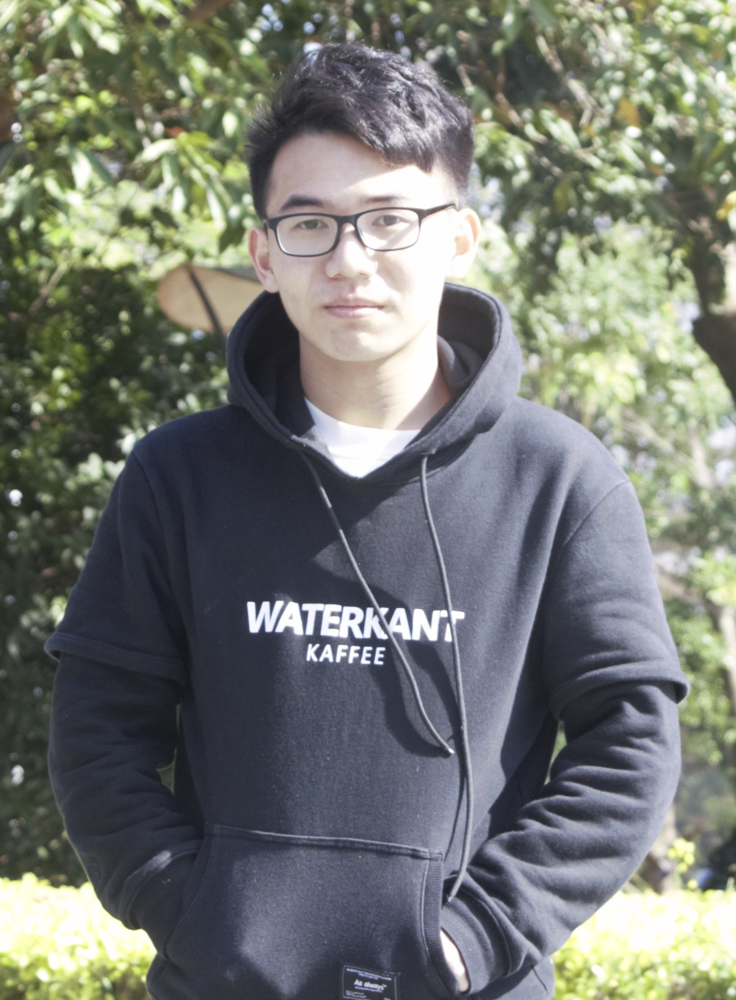
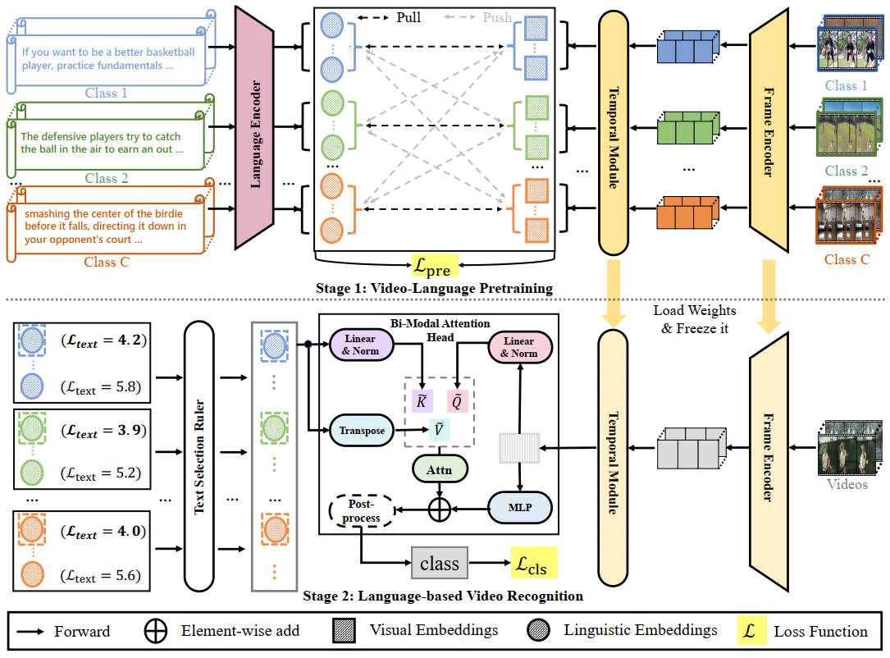

About Me
I am currently a second year M.Sc. student in the Department of Computer Science and Technology, Nanjing University, supervised by Prof. Limin Wang. Previously, I received the B.Sc. degree from the Department of Computer Science and Technology, Harbin Institute of Technology in 2020 (overall GPA 3.87/4.0, rank 1/70).
I am broadly interested in computer vision and related problems in deep learning. My previous research focused on video understanding and action recognition. Currently, I'm particularly interested in vision and language.
Experience
| Dec 2021 - Present | Research Intern at Shanghai AI Lab, Digital Human group, working with Wayne Wu |
| Jun 2021 - Dec 2021 | Research Intern at Shanghai AI Lab, OpenMMLab, worked with Kai Chen and Haodong Duan |
| Dec 2019 - Jun 2021 | Research Intern at SenseTime, EIG Algorithm Middle Platform, worked with Kai Chen |
Projects
Publications

Awards
- National Scholarship, HIT, 2017, 2018
- Heilongjiang Province Merit Student, HIT, 2018
- Chunhui Innovation Achievement Award (20 students), HIT, 2019
- Outstanding Graduate, HIT, 2020
- First Prize Scholarship (HIT, NJU), 2018, 2020
- Second Prize Scholarship (HIT, NJU), 2017, 2019, 2021